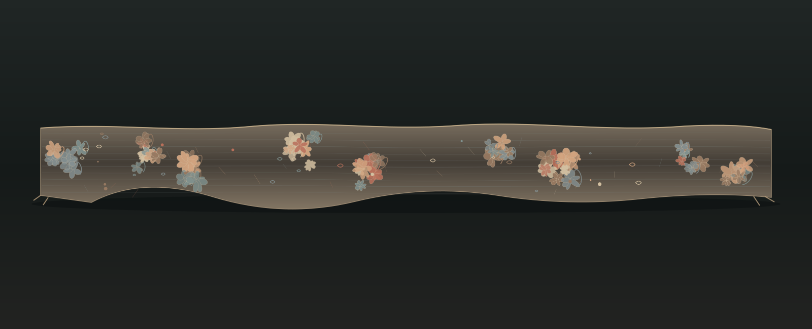

A Line of Knots
A response to a narrow silk gimp in the chance images: 20.3 × 2.5 cm, ca. 1750. The source photograph shows gathered blossoms and loose loops across a very thin band. I translated that uneven rhythm into a digital weave, leaving the knots distinct from any botanical pattern.

This is a drawing from a photograph, not a reconstruction of the textile.
Return to the studio